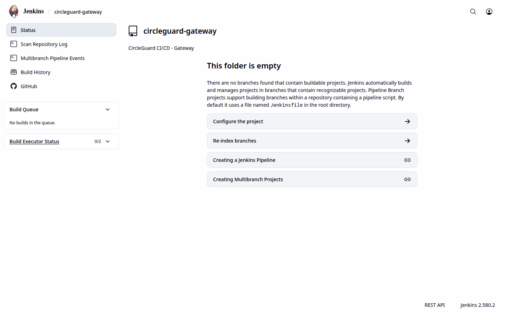
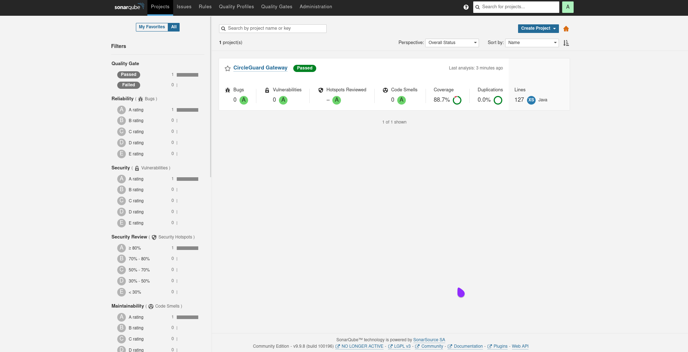
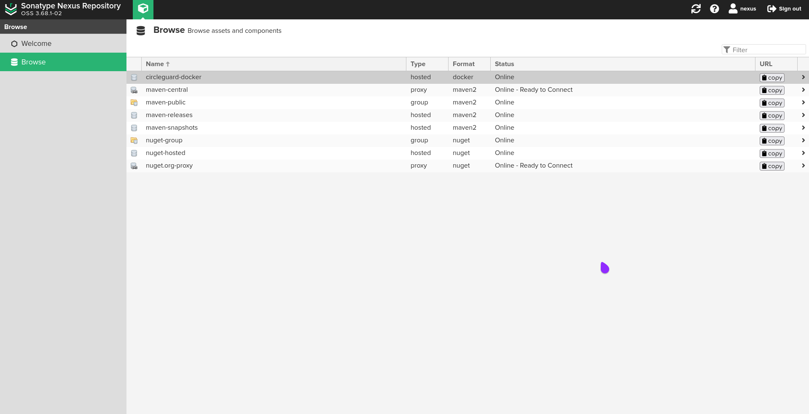
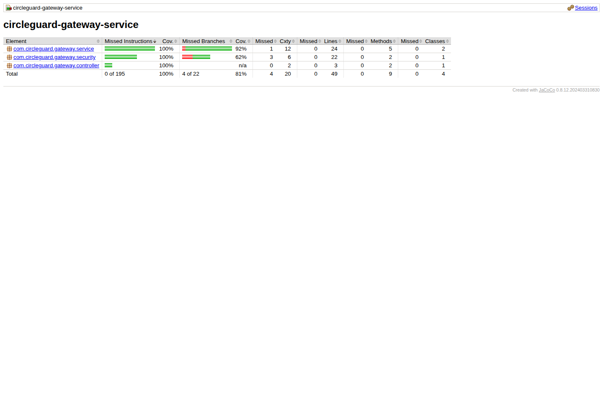
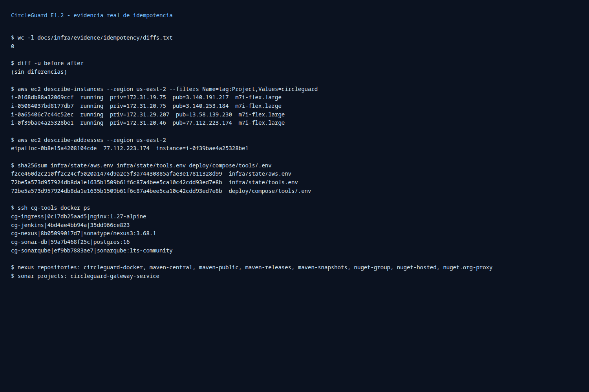
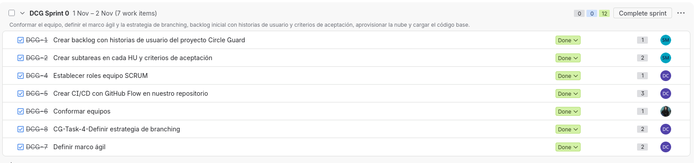
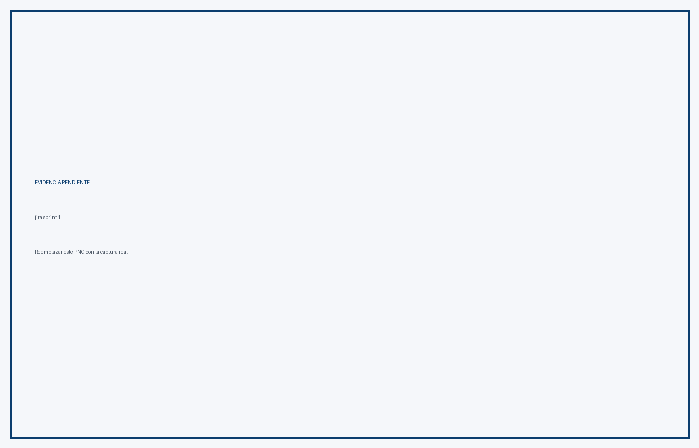
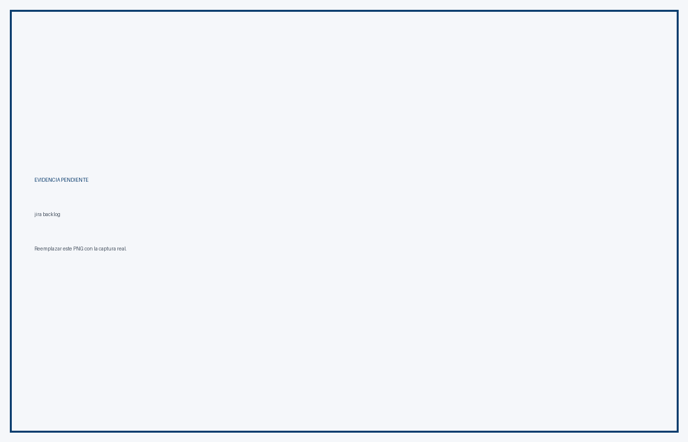
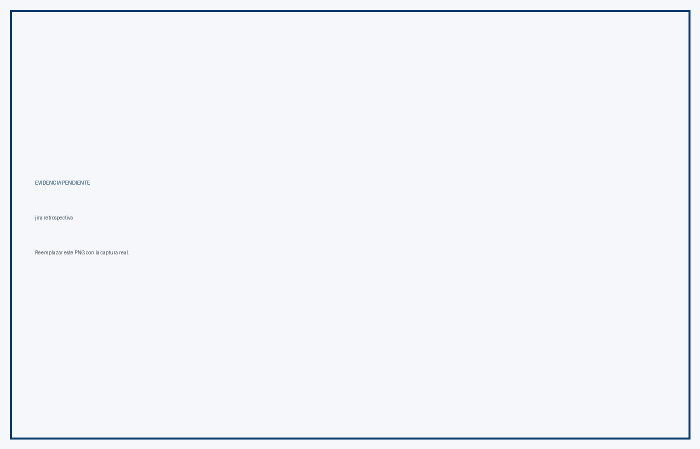

Versión evaluada: 1.2.5
Fecha de cierre: 10 de noviembre de 2026
Equipo: Daniela Castaño, Santiago Estrada, Faiber Piedrahita, Alejandro Quiñones
Repositorio: ingesoft5/circle-guard-finalproject-A00401805-A00405090-A00401428-A00377013
Rama de entrega: main
Entregable oficial: este documento PDF (E1.2-Informe-Final.pdf)
La Parte 1 de CircleGuard queda cerrada sobre la infraestructura AWS existente. La rama main está desplegada con la versión 1.2.5 y el pipeline multibranch de Jenkins ejecutó la cadena completa:
Build → Publish a Nexus → Docker → Docker client → Deploy dev → E2E → Deploy stage → Approval prod → Deploy prod
El build main #8 terminó en SUCCESS con tag 1.2.5. Los dieciséis escenarios E2E pasaron, los tres ambientes quedaron aislados y saludables y el rollback se demostró con el build #10, que desplegó 1.2.0 en producción y luego fue restaurado a 1.2.5.
| Criterio | Peso | Estado | Evidencia principal |
|---|---|---|---|
| P1.1 Gestión ágil y branching | 2,0 % | Cumplido | Sprint 0 review, PR #42, ruleset 26333547, tag ruleset 26987068 |
| P1.2 Nube y automatización Bash | 2,0 % | Cumplido | 4 EC2, 3 ambientes aislados, scripts infra/bootstrap-* |
| P1.3 Empaquetamiento inmutable | 2,5 % | Cumplido | 9 imágenes 1.2.5, Dockerfiles multi-stage, usuario no root, healthchecks |
| P1.4 Pipeline CI Jenkins | 2,5 % | Cumplido | Multibranch, webhook, Shared Library, SonarQube gate, build selectivo |
| P1.5 Entrega continua y promoción | 2,5 % | Cumplido | main #8, E2E 16/16, stage, aprobación, prod y rollback #10 |
| P1.6 Pruebas automatizadas | 3,5 % | Cumplido | Cobertura ≥60 % en los 5 núcleos, 3 integraciones y 16 E2E |
| P1.7 Change management y release notes | 1,5 % | Cumplido | v1.1.1, v1.2.0, v1.2.5, CHANGELOG y plantilla de cambios |
| P1.8 Documentación, video e IAG | 1,0 % | Cumplido | README, diagramas, IAG y este PDF; sustentación oral en lugar de video |
Resultado técnico: la plataforma, el pipeline y la promoción están operativos. El cierre documental queda cubierto por este PDF, las cinco capturas de Jira ya incorporadas y la bitácora de IAG. La demostración se realiza en la sustentación oral del equipo; no aplica video.
La cuenta operativa es 556880009270, región us-east-2. Se mantienen cuatro instancias m7i-flex.large con Docker y Docker Compose.
| Host | Instance ID | IP privada | IP pública | Función |
|---|---|---|---|---|
cg-tools |
i-014c4de36bf7ff9ca |
172.31.20.5 |
3.131.150.169 |
Jenkins, SonarQube, Nexus y registry |
cg-dev |
i-021e09467c8902957 |
172.31.30.130 |
3.141.16.138 |
Ambiente de desarrollo |
cg-stage |
i-0fe3fb08585c690b1 |
172.31.23.240 |
18.220.99.102 |
Ambiente de staging |
cg-prod |
i-041a3a3e4b1ea2d3c |
172.31.21.137 |
3.19.69.181 |
Producción |
Security Groups:
circleguard-tools-sg: sg-0de205d35d465d041.circleguard-envs-sg: sg-04045455edcc6a0d3.circleguard-e12-key.172.31.20.5:5000.Los tres ambientes usan redes Docker aisladas y volúmenes propios. El aprovisionamiento es idempotente mediante infra/bootstrap/bootstrap-all.sh, bootstrap-tools.sh, bootstrap-envs.sh, bootstrap-github.sh y bootstrap-check.sh.
| Servicio | URL / endpoint | Estado |
|---|---|---|
| Jenkins | http://3.131.150.169:8080/ |
Healthy, build #8 y #10 exitosos |
| SonarQube | http://3.131.150.169:9000/ |
Healthy, quality gate bloqueante |
| Nexus | http://3.131.150.169:8081/ |
Healthy, images y Maven |
| Registry | 172.31.20.5:5000 |
Imágenes 1.2.5 publicadas |
| Ingress | http://3.131.150.169/ |
Enruta a la web de dev |
| Web dev | http://172.31.30.130:8081 |
Healthy |
| Gateway dev | http://172.31.30.130:8087 |
Healthy |
| Web stage | http://172.31.23.240:8081 |
Healthy |
| Web prod | http://172.31.21.137:8081 |
Healthy |
Los puertos administrativos (22, 8080, 8081, 9000) están restringidos a la IP de trabajo <IP-DE-TRABAJO>/32. El puerto 80 del ingress es el único expuesto públicamente. Nexus publica 5000 hacia los Security Groups de los ambientes y los healthchecks de E2E usan 8081 y 29092 desde tools.
El job multibranch es:
circle-guard-finalproject-A00401805-A00405090-A00401428-A00377013
La biblioteca compartida se carga con @Library('circleguard@main') y vive en jenkins/vars/ (ci.groovy, ciNotify.groovy, ciServices.groovy, ciVersion.groovy).
Etapas del pipeline:
ROLLBACK_TAG).Evidencia principal:
http://3.131.150.169:8080/job/circle-guard-finalproject-A00401805-A00405090-A00401428-A00377013/job/main/8/http://3.131.150.169:8080/job/circle-guard-finalproject-A00401805-A00405090-A00401428-A00377013/job/main/10/El build main #8 ejecutó la promoción completa:
dev.stage después de E2E.prod.prod con tag 1.2.5.Servicios de producción verificados:
cg-auth-prod, cg-form-prod, cg-gateway-prod, cg-identity-prod, cg-promotion-prod y cg-web-prod con imágenes 172.31.20.5:5000/circleguard-docker/*:1.2.5.cg-kafka-prod, cg-neo4j-prod, cg-openldap-prod, cg-postgres-prod y cg-redis-prod healthy.200 en 8087 (gateway), 8180 (auth), 8083 (identity), 8088 (promotion), 8086 (form) y 8081 (web).El build main #10 se ejecutó con ROLLBACK_TAG=1.2.0:
1.2.0.200 en los seis servicios.deploy.sh prod 1.2.5 y prod volvió a 1.2.5.1.2.5.| Servicio | Cobertura de líneas | Líneas cubiertas |
|---|---|---|
| auth | 97,98 % | 194 / 198 |
| form | 86,43 % | 121 / 140 |
| gateway | 100,00 % | 49 / 49 |
| identity | 94,62 % | 88 / 93 |
| promotion | 74,03 % | 630 / 851 |
Cobertura agregada de los cinco servicios núcleo: 81,29 % de líneas (1082 / 1331). El reporte global de JaCoCo del pipeline (#8) fue 88,37 % de líneas, 96,62 % de clases y 70,81 % de métodos sobre el conjunto completo de módulos; no es comparable con la suma de los cinco núcleos.
La suite ejecutada en dev contiene 16 pruebas:
login.spec.ts: 2.health-form.spec.ts: 2.access-validation.spec.ts: 9.promotion-flow.spec.ts: 3.Resultado del pipeline: 16/16 passed, con un worker y Chromium headless.
mainRuleset de rama 26333547 (github-actions):
continuous-integration/jenkins/pr-merge.Ruleset de tags 26987068 (protect-release-tags):
tag.refs/tags/v*.deletion y non_fast_forward.docs/agil/sprint-0/review.md contiene el acta del Sprint 0: 7/7 ítems, 12/12 puntos, demostración, métricas, decisiones y acciones.docs/informe/Sprint-Review-Sprint-0.docx.Tags publicados: v1.0.0, v1.0.1, v1.1.0, v1.1.1, v1.2.0, v1.2.1, v1.2.2, v1.2.3, v1.2.4, v1.2.5, v1.2.6.
v1.2.6 es un tag documental sobre ee17b5c (merge de #42); las imágenes desplegadas siguen siendo 1.2.5.
v1.2.7 es el release más reciente en GitHub y también es documental. Las imágenes desplegadas en los tres ambientes siguen siendo 1.2.5.
Notas de release:
docs/release-notes/v1.1.1.md.docs/release-notes/v1.2.0.md.docs/release-notes/v1.2.5.md.CHANGELOG.md actualizado con las secciones [1.2.5], [1.2.0] y [1.1.1].La plantilla de solicitud de cambio y la política de aprobación están en docs/change-management.md.
nginx-unprivileged (101:101).HEALTHCHECK en los compose de dev, stage y prod.infra/state/tools.env está ignorado por Git.<IP-DE-TRABAJO>/32; solo el ingress 80 es público.v* protegidos contra borrado y force-push.3.131.150.169.Las cuatro instancias m7i-flex.large se mantuvieron encendidas durante la ventana de ejecución. La estimación es de aproximadamente USD 75,28 por 180 horas para el conjunto, más almacenamiento EBS. Para la entrega se recomienda mantenerlas encendidas hasta la demostración y apagarlas después.
| Problema | Causa | Solución |
|---|---|---|
| Nexus respondía HTTP 500 al publicar | Disco de tools al 90 %; OrientDB en read-only | Volumen EBS de 40 a 60 GB, growpart y resize2fs; 24 GB libres |
cg-openldap no pasaba el healthcheck |
ldapsearch anónimo devolvía No such object |
Bind autenticado con el admin de LDAP |
| E2E fallaba en dev | Faltaban AUTH_URL e IDENTITY_URL; gateway se consultaba en la web |
Variables en Jenkinsfile y GATEWAY_URL en el spec |
| Login E2E ambiguo | getByText('SIGN IN') coincidía con dos textos |
Locator exacto |
| Segundo test de login esperaba diálogo | Alert.alert no genera diálogo en React Native Web |
Validación de permanencia en /login |
| Push de imagen con digest mismatch | Nexus sin espacio durante el push | Limpieza, ampliación de disco y reintento |
https://github.com/ingesoft5/circle-guard-finalproject-A00401805-A00405090-A00401428-A00377013https://github.com/ingesoft5/circle-guard-finalproject-A00401805-A00405090-A00401428-A00377013/pull/42http://3.131.150.169:8080/job/circle-guard-finalproject-A00401805-A00405090-A00401428-A00377013/job/main/8/http://3.131.150.169:8080/job/circle-guard-finalproject-A00401805-A00405090-A00401428-A00377013/job/main/10/http://3.131.150.169:9000/http://3.131.150.169:8081/
Jenkins: acceso administrativo y ejecución del pipeline.

SonarQube: quality gate bloqueante.

Nexus: repositorios Maven y Docker.

JaCoCo: reporte de cobertura del gateway.

Bootstrap: ejecución idempotente de los scripts de infraestructura.

Jira DCG: revisión del Sprint 0.

Jira DCG: revisión del Sprint 1.

Jira DCG: backlog priorizado.
Jira DCG: historias y criterios de aceptación.

Jira DCG: retrospectiva del equipo.
| Criterio | Evidencia |
|---|---|
| P1.1 | Sprint 0 review, PR #42, ruleset 26333547, tag ruleset 26987068, capturas de Jira |
| P1.2 | Cuatro EC2, tres ambientes aislados, scripts infra/bootstrap-*, captura de idempotencia |
| P1.3 | Nueve imágenes 1.2.5, Dockerfiles multi-stage, usuario no root, healthchecks |
| P1.4 | Jenkins multibranch, webhook, Shared Library, Sonar gate, build selectivo |
| P1.5 | main #8, E2E 16/16, stage, aprobación, prod healthy, rollback #10 |
| P1.6 | Tabla de cobertura, tres integraciones, 16 E2E, reportes JaCoCo |
| P1.7 | Release notes 1.1.1/1.2.0/1.2.5, CHANGELOG, tags y tag documental 1.2.6 |
| P1.8 | README, diagramas, IAG_REGISTRO.md, este PDF, capturas de Jira y sustentación oral |
La plataforma y el pipeline están operativos y la evidencia documental está completa en este PDF. Las actividades restantes son de entrega y sustentación, no de infraestructura:
La bitácora completa está en IAG_REGISTRO.md (605 líneas), organizada por módulos y responsables:
La bitácora incluye las decisiones, los prompts y la reflexión crítica sobre el uso de asistentes de IA en el desarrollo y la operación del proyecto.
La Parte 1 queda cerrada técnicamente con la release 1.2.5. El pipeline ejecuta la cadena completa desde main, los tres ambientes están aislados, las pruebas E2E pasan, la cobertura supera el 60 % en los cinco servicios núcleo y el rollback está demostrado. La gobernanza de main y de los tags quedó configurada con reglas verificables.
El cierre documental se completa con este PDF, el acta del Sprint 0, las release notes y la bitácora de IAG. La demostración se realiza en la sustentación oral; no se publica video. Las capturas reales de Jira están incorporadas en la sección 11.2.1.